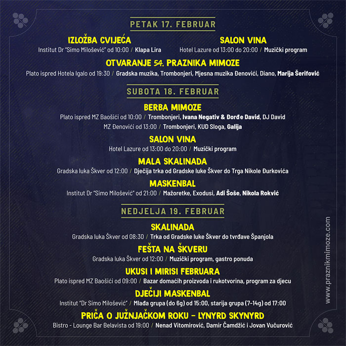

54. PRAZNIK MIMOZE 2023
54. Praznik mimoze biće održan u Herceg Novom od 17. februara do 04. marta 2023. godine.

Najveću zimsku turističko-propagandnu manifestaciju u Crnoj Gori otvoriće i zatvoriti koncerti regionalnih muzičkih zvijezda u Igalu – na otvaranju u petak, 17. februara nastupiće Marija Šerifović, a na zatvaranju u subotu, 04. marta Toni Cetinski. Koncertu otvaranja prethodiće defile Gradske muzike, Mjesne muzike Đenović, mažoretki i trombonjera, a zatvaranju velika međunarodna karnevalska povorka. Tradicionalna Fešta od mimoze, ribe i vina na hercegovskoj rivijeri biće održana 18. februara, a istog datuma je u planu i prvi maskenbal.
Kada jedna manifestacija postoji i održava se 54 godine, onda je jasno da je toliko dugo opstala zbog dobre zabave, kvaliteta i naših Novljana koji više od pet decenija tokom februara i marta šire svoje ruke i dočekuju furešte iz svih krajeva.
Ove godine, tokom 16 dana Praznika mimoze, od 17.02. do 04.03., na više od 40 događaja čekamo vas da zajedno uživamo u maskenbalima, karnevalima, koncertima, pozorišnim predstavam, sportskim programima…i mnogim drugim manifestacijama koje tradicionalno čine Praznik mimoze jednim od najveselijih događaja tokom godine.
Tokom 16 dana u najsunčanijem gradu Jadrana biće priređena vrhunska zabava, muzički, gastro, kulturni, dečiji i sportski programi, koncerti, kao i jedan novitet – saradnja sa EXIT festivalom i veliki muzički događaj Winter Flower koji će predvoditi svetski poznati DJ i producent Claptone i najtraženije muzičko ime Balkana, Konstrakta sa grupom Zemlja gruva, istaknuto je na konferenciji za novinare.
54. izdanje cvjetnog festivala više nego ikada donosi zabavu za sve generacije. Uz tradicionalno lijepo vrijeme tokom trajanja Praznika mimoze, ne postoji ni jedan valjan razlog da ne posjetite Herceg Novi u drugoj polovini februara i početkom marta.

Program 54. Praznika mimoze biće protkan mnogobrojnim kulturnim dešavanjima – književnim večerima sa izuzetnim imenima poput Ljubivoja Ršumovića i Vedrane Rudan, u okviru Dana Novog Sada biće održan i koncert Zvonka Bogdana, za obožavatelje tvrđeg muzičkog zvuka tu je „Veče južnjačkog roka“ posvećeno bendu Lynyrd Skynyrd, na programu su i pozorišne predstave za djecu i odrasle, za najmlađe su tu i Dječiji maskenbal i Cvijetna povorka, a posebnu pažnju i simpatije uvijek mame autentično novski događaji – Trka karića, Picigin, Skalinada, turnir u briškuli i trešeti.
„Srećni smo što baš na Praznik mimoze u Crnu Goru dovodimo autentična muzička imena kao što su Claptone i Konstrakta. Claptone je jedan od vodećih i najintrigantnijih muzičara svetske elektronske scene, dok je Konstrakta najtraženije regionalno ime, a svojim talentom i harizmom je i te tako prevazišla granice regiona. Posebno nam je drago što ćemo zajedno slaviti mimozu, cvet koji spaja zimu i proleće, donosi preko potreban optimizam i podseća nas da je neophodno da prirodu štitimo i da joj se uvek vraćamo, jer se u njoj kriju najveća čuda“, istakao je osnivač i direktor EXIT festivala Dušan Kovačević.
Završna karnevalska povorka biće održana u subotu, 04. marta, u Igalu, nakon čega će uslijediti tradicionalno Spaljivanje Krnevola, glavnog krivca za sve nedaće u Herceg Novom tokom protekle godine. Te večeri će 54. izdanje Praznika mimoze koncertom zaključiti regionalna muzička zvijezda, Toni Cetinski.
Praznik mimoze je jedan od najstarijih i najpopularnijih festivala u regionu. U slavu mimoze, mirisnog žutog cveta koji potiče iz Australije, a koji su u Herceg Novi doneli čuveni bokeljski pomorci sa svojih dalekih putovanja, biće organizovano niz manifestacija, ali i potpisan Protokol o saradnji između turističkih organizacija Herceg Novog i Beograda.
Rezervišite svoje mesto u apartmanima MONAKO (klikni za detalje) na vrijeme i budite dio neverovatnog praznika mimoze 2020. godine u Herceg Novom.


PROGRAM
17-19.02. od 10:00
Izložba cvijeća
Tradicionalna izložba cvijeća koja će tokom sva tri dana vikenda (petak - nedjelja) biti održana u Institutu "Dr Simo Milošević". Prvog dana izložbe, na otvaranju, nastupiće klapa Lira.17-18.02. od 13:00
Salon vina
U hotelu "Lazure" u Meljinama u petak i subotu od 13h organizuje se salon vina u okviru koga posjetioci mogu degustirati vina iz regiona. U okviru salona vina, biće organizovan i muzički program.Petak 17.02. od 18:30
Otvaranje 54. Praznika mimoze
Povorka povodom otvaranja Praznika mimoze počinje u 18:30 na glavnom gradskom trgu u centru Herceg Novog. Uz muziku i ples krećemo gradskim ulicama u pravcu Igala gdje povorka završava na platou ispred hotela "Igalo". Na samoj povorci učestvuju trombonjeri, mažoretke, Gradska muzika i Mjesna muzika Đenovići. Po okončanju povorke, na platou ispred hotela "Igalo" nastupiće i plesna grupa "Diano". Na kraju, na istom mjestu, očekuje nas spektakularni koncert Marije Šerifović.Subota 18.02. od 09:00
Berba mimoze
Nadaleko poznata manifestacija koja okuplja i preko 20.000 ljudi duž hercegnovske rivijere. Tradicionalna povorka od Kumbora do Đenovića tokom koje posjetioci mogu uživati uz muziku i besplatnu ribu, vino i pivo. Ovu manifestaciju uveličaće hercegnovski trombonjeri, mažoretke, Gradska muzika i Mjesna muzika Đenovići. U Baošićima, ispred MZ Baošići sa početkom u 10 časova nastupiće Ivana Negativ i Đorđe David, kao i DJ David. U nastavku programa, od 13 časova ispred MZ Đenovići, organizovan je koncert grupe Galija.Subota 18.02. od 12:00
Mala skalinada
Herceg Novi je grad poznat po skalama (stepenicama), pa je zato i logično da tokom Praznika mimoze imamo Skalinadu - trku uz gradske stepenice. U subotu 18.02. na programu je trka za djecu, od gradske luke Škver, do glavnog gradsko trga - Trga Nikole Đurkovića.Subota 18.02. od 21:00
Maskenbal
Događaj za koji se uvijek traži karta više - tradicionalni maskenbal tokom Praznika mimoze jedna je od najveselijih fešti u našem gradu! Veliki broj maski i takmičenje za najbolju masku u raznim kategorijama samo su dodatni razlog da budete na ovom događaju. Svim gostima koji imaju masku u skladu sa propisima, ulazak na maskenbal je besplatan. Kao i uvijek, tokom maskenbala je planiran bogat muzički program - atmosferu će zagrijati Gradska muzika i mažoretke, zatim domaća grupa Exodusi, a za podizanje atmosfere na vrhunac zaduženi su Adi Šoše i Nikola Rokvić.Nedjelja 19.02. od 08:30
Skalinada
Nakon trke za djecu u subotu, u nedjelju 19.02. očekuje nas trke uz stepenice za odrasle - Skalinada u okviru koje se skalama trkamo od gradske luke Škver, pa sve do tvrđave Španjola na vrhu grada.Nedjelja 19.02. od 12:00
Fešta na Škveru
Uz Skalinadu, tokom nedjelje na Škveru nas očekuje i velika fešta u okviru koje će biti organizovan muzički program, kao i gastro ponuda Herceg Novog.Nedjelja 19.02. od 09:00
Ukusi i mirisi februara
Tokom nedjelje se družimo i u Baošićima na Ukusima i mirisima februara u okviru kojih će biti održan bazar domaćih proizvoda i rukotvorina, zajedno sa specijalno organizovanim programom za djecu.Nedjelja 19.02. od 15:00
Dječiji maskenbal
Maskenbal za najmlađe, jedan je od najljepših događaja na Prazniku mimoze. Podijeljeni u dvije grupe - mlađu (do 6g) od 15 časova i stariju (7-14g) od 16:30Nedjelja 19.02. od 19:00
Priča o južnjačkom roku - Lynyrd Skynyrd
Ponedjeljak 20.02. od 20:00
Dani Beograda
Utorak 21.02. od 18:00
Susret sa piscem - Ljubivoje Ršumović
Srijeda 22.02. od 18:00
Predstava za djecu "20.000 milja pod morem"
Petak 24.02. od 19:00
Izložba "Osjeti duh Novog Sada"
Petak 24.02. od 21:00
Dani Novog Sada - Zvonko Bogdan
Subota 25.02. od 10:00
Briškula i trešeta - 1. dan
Subota 25.02. od 10:00
Trka karića - Karotrc
Subota 25.02. od 21:00
Winter Flower - EXIT
Nedjelja 26.02. od 14:00
Cvjetna povorka
Nedjelja 26.02. od 10:00
Briškula i trešeta - 2. dan
Nedjelja 26.02. od 10:00
Briškula i trešeta - 2. dan
Nedjelja 26.02. od 21:00
Riblja večera